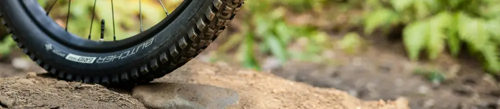

Panduan Praktis: Cara Cek dan Tambal Ban Tubeless Sendiri saat di Jalan
Dipublikasikan pada 13 Agustus 2025

Banyak orang menyukai perjalanan dengan sepeda motor karena memberikan sensasi dan fleksibilitas tersendiri. Namun, ada satu hal yang sering bikin panik: ban motor kempes saat berada jauh dari bengkel atau pemukiman. Situasi seperti ini bisa jadi mimpi buruk, terutama saat sedang touring.
Untungnya, sekarang sudah ada solusi praktis yang bisa dibawa kemana-mana, yaitu kit penambal ban tubeless. Alat ini biasanya terdiri dari alat penusuk spiral, alat penusuk dengan celah, rubber cement, dan "cacing" penambal ban. Dengan perlengkapan ini, Anda bisa menambal ban sendiri dan melanjutkan perjalanan sampai menemukan bengkel ban terdekat.
Langkah-Langkah Menambal Ban Tubeless dengan Mudah
Berikut adalah cara mudah menggunakan kit tambal ban tubeless untuk mengatasi kebocoran di tengah jalan:
- Cari Titik Kebocoran: Pertama-tama, temukan lokasi kebocoran pada ban. Jika sudah ketemu, gunakan alat penusuk spiral yang sudah dilapisi rubber cement untuk membersihkan dan memperbesar lubang agar tambalan bisa menempel sempurna.
- Siapkan "Cacing" Penambal: Masukkan "cacing" penambal ke dalam alat penusuk yang memiliki celah di ujungnya. Lumuri "cacing" dan ujung alat dengan rubber cement.
- Tusukkan Penambal: Tusukkan "cacing" penambal ke lubang ban dengan mantap. Kemudian, tarik alat penusuk perlahan hingga sebagian "cacing" menonjol keluar dari lubang.
- Rapikan Sisa Tambalan: Rapikan sisa "cacing" yang menonjol, dan ban pun siap digunakan kembali untuk melanjutkan perjalanan Anda.
Penting untuk diingat, kit tambal ban tubeless ini efektif untuk kebocoran berbentuk lubang tusukan, seperti paku. Jika kebocorannya berupa sayatan atau sobekan besar, Anda membutuhkan metode atau alat penambal yang berbeda.
Mudah kan, menambal ban tubeless sendiri? Selain praktis, alat ini ringan dan tidak memakan banyak tempat saat Anda bawa bepergian. Untuk melihat prosesnya secara langsung, tonton video singkat di akhir artikel ini. Semoga perjalanan Anda selalu aman dan menyenangkan!